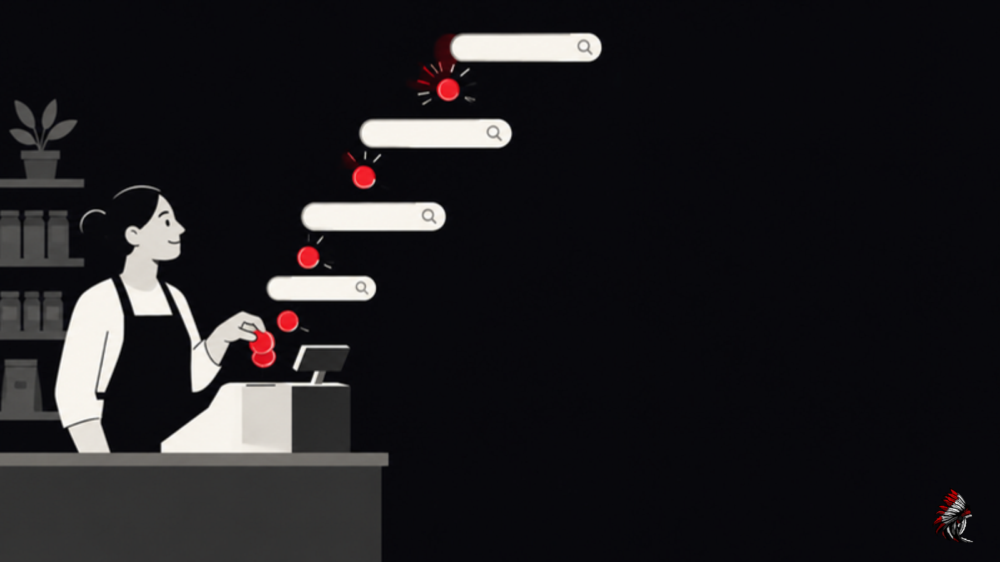

Google Ads Cost in 2026: How Much Does Google Ads Cost a Small Business?
10 min read

Last updated: October 28, 2026
Google Ads cost has no fixed price: you set the budget, and on Search you pay only when someone clicks. In LocaliQ's 2026 search advertising benchmarks, the average cost per click was $5.42 and the average cost per lead was $66.69, with wide swings by industry, from $1.63 per click in arts and entertainment to $9.87 for attorneys.
Those averages tell you where the market is, not what you will pay. Your cost depends on the searches you bid on, how good your ads and landing pages are, where your customers are, and how you let Google bid. This guide explains how Google Ads pricing works, what clicks cost by industry, how to set a monthly budget, the costs beyond clicks that many owners forget, and how to tell whether the spend is worth it.
How Google Ads pricing works
Google sells search ads through an auction that runs every time someone searches. Google's own guide to Google Ads cost says "there is no fixed price tag," and its help center is direct about the minimum: "There's no minimum." You choose how much to spend per day, per month and per ad, and for Search ads you pay when someone clicks.
What decides the price of a click
Your bid is only part of the auction. Google's help page on actual cost per click explains that it combines ad quality at the moment of the auction (expected clickthrough rate, ad relevance and landing page experience) with your maximum bid, the competitiveness of the auction and the context of the person's search. That combination decides whether your ad shows and where.
What you pay is usually less than your maximum bid. Google says you "only pay what's minimally required" to clear the auction's thresholds and beat the advertiser ranked just below you. A more relevant ad with a better landing page can hold the same position for less money than a weaker ad with a bigger bid.
How your budget is actually charged
Google Ads works on an average daily budget, not a hard daily cap. According to Google's help page on overdelivery, a campaign can spend up to twice its average daily budget on a busy day. Over a month, Google limits charges to 30.4 times your average daily budget (the average number of days in a month), and "you'll never actually pay more than your spending limits."
So a $50 average daily budget means your monthly charges will not exceed $1,520, even if some days run higher than $50.
Average Google Ads cost per click by industry
LocaliQ's 2026 search advertising benchmarks (published May 26, 2026, updated June 1, 2026) report averages based on thousands of its customers' campaigns on Google Ads and Microsoft Ads. LocaliQ does not publish the data period for this edition. Here are the figures for a range of small business industries.
| Industry | Avg. cost per click | Avg. conversion rate | Avg. cost per lead |
|---|---|---|---|
| Arts and entertainment | $1.63 | 5.91% | $26.84 |
| Automotive repair and service | $4.35 | 15.51% | $29.96 |
| Restaurants and food | $2.05 | 8.05% | $30.57 |
| Beauty and personal care | $4.62 | 10.35% | $39.25 |
| Physicians and surgeons | $4.76 | 12.43% | $40.04 |
| Personal services | $7.17 | 12.34% | $54.60 |
| Health and fitness | $6.17 | 6.94% | $67.36 |
| Dentists and dental services | $8.00 | 10.67% | $72.97 |
| Home and home improvement | $8.33 | 8.05% | $90.92 |
| Business services | $5.87 | 4.85% | $93.69 |
| Real estate | $3.22 | 3.70% | $102.51 |
| Attorneys and legal services | $9.87 | 5.55% | $131.63 |
| All industries | $5.42 | 8.18% | $66.69 |
Two patterns are worth noticing. First, a cheap click is not a cheap lead: real estate clicks average $3.22, but with a 3.70% conversion rate the average lead costs $102.51. Second, LocaliQ reports that average cost per click rose again this year while average cost per lead fell for the first time in five years, which suggests advertisers are getting more out of each click even as clicks get pricier.
What drives the cost of Google Ads
Google's guide and help pages point to the same handful of levers:
- Competition for the keyword. Searches with clear buying intent, such as "emergency plumber near me," attract more bidders and cost more per click.
- Ad quality. Expected clickthrough rate, ad relevance and landing page experience feed into the auction. Google's Quality Score, rated 1 to 10 for each keyword, is a diagnostic summary of those three components. Google notes that Quality Score itself is not an input in the auction, but the quality signals behind it are.
- Location. Bidding on customers in a dense, competitive city usually costs more than in a smaller market.
- Match types. Broad match reaches more searches, including some you may not want. Phrase and exact match are tighter. Whatever you choose, review the search terms report and add negative keywords to stop paying for irrelevant searches.
- Bidding strategy. Google's guide notes that a Maximize Clicks strategy may yield a lower cost per click, while Maximize Conversions may pay more per click to find people more likely to act.
- Season. Demand and competition change through the year, so costs move with them.
Google Ads for small business: how to set a monthly budget
Start from the customers you need, not from a round number.
- Pick one goal. Calls, form leads or online sales. One campaign, one primary conversion.
- Estimate your cost per lead. Use your own history if you have it. If not, start with your industry's average from the table.
- Decide how many leads a month you need to learn something. A handful of leads is noise. Aim for enough that one good or bad week does not decide everything.
- Multiply, then divide by 30.4. Leads needed times cost per lead gives a monthly budget. Divide by 30.4 to get the average daily budget you enter in Google Ads.
- Check it against what a customer is worth. If the numbers say you would pay more for a customer than that customer brings in, fix the offer, the landing page or the targeting first.
Illustrative example (not a benchmark): a home improvement company wants 15 leads a month. At the industry average of $90.92 per lead, that is about $1,364 a month, or an average daily budget of about $45. If 1 in 4 leads becomes a job, the company is paying about $364 in clicks per new customer, before any other costs. That only works if an average job is worth comfortably more.
A note on very small budgets: Google's help page on learning periods warns that low daily budgets and narrow targeting can slow down how quickly automated bidding settles. A budget that buys only a few clicks a day can take a long time to tell you anything.
Costs beyond clicks
Your click spend is only part of what Google Ads costs a business. Plan for these too:
- Management. If an agency or freelancer runs the account, you pay for their time. Common pricing models include a flat monthly fee, a percentage of ad spend, or a mix. Ask exactly what the fee covers and what reporting you get. Our guide on how to tell if your Google Ads agency is doing a good job covers what to look for.
- Landing pages. Landing page experience is one of the quality signals in the auction, so a slow or confusing page can raise what you pay per click and lower how many clicks become leads.
- Conversion tracking. Without tracking, you cannot tell which keywords bring customers, and automated bidding has nothing reliable to learn from. Setting it up properly takes time or a specialist. If your numbers suddenly look wrong, read what to check first when Google Ads conversions drop.
- Your own time. Someone has to answer the calls and follow up on leads quickly. Leads that wait go cold, and that cost does not show up in Google Ads.
How to tell if Google Ads is worth it for your business
Google Ads is worth it when the cost of winning a customer is comfortably below what that customer is worth. To judge it:
- Track conversions, not just clicks. Clicks and impressions describe activity. Calls, forms and sales describe results.
- Compare cost per lead with lead quality. Check which leads became customers, not just how many came in.
- Use your own records as the final word. Your CRM, booking system or invoices show what turned into revenue.
- Give it enough time. Google says the learning period for its automated bidding never lasts more than 7 days, and suggests judging results over 2 conversion cycles or a 2-week window, whichever is longer. For a business where a lead takes weeks to close, that means a fair test is measured in weeks, not days.
- Change one thing at a time. If cost per lead is too high, adjust keywords, ads, landing page or bidding one at a time so you know what made the difference.
FAQ
Is there a minimum budget for Google Ads?
No. Google's help center says "There's no minimum." You set an average daily budget, and Google may spend up to twice that on a given day, but monthly charges will not exceed 30.4 times your average daily budget. In practice, a budget needs to be large enough to bring in enough clicks and leads to learn from.
How much should a small business spend on Google Ads?
Work backward from the leads you need. Multiply the number of leads you want each month by your expected cost per lead, then divide by 30.4 for a daily budget. As an illustration, 15 leads at LocaliQ's 2026 all-industry average of $66.69 per lead comes to about $1,000 a month.
What is the average cost per click on Google Ads?
LocaliQ's 2026 search advertising benchmarks put the average cost per click at $5.42 across industries. Industry averages range from $1.63 for arts and entertainment to $9.87 for attorneys and legal services.
Do I pay if nobody clicks?
For standard Search ads charged per click, no. Google's help center says, "You'll only pay when someone clicks your ad." Some other campaign types and bidding options charge differently, so check how a campaign is charged before you launch it.
How long before Google Ads shows results?
Ads can start showing soon after approval, but judging results takes longer. Google says its automated bidding learning period never lasts more than 7 days and recommends evaluating performance over 2 conversion cycles or a 2-week window, whichever is longer.
How Lonko Digital looks at this
When owners ask what Google Ads costs, what is really happening is a question about what a customer costs. It matters because a cheap click can still be an expensive customer. What to do next is set your budget from the leads you need and judge it by cost per customer. We are building Lonko Digital to help business owners read signals like this, starting with Google Ads. It is still in development and not available to customers yet. Read more about Lonko Digital, browse our Insights, or start with Is Your Google Ads Agency Doing a Good Job?. To get new pieces, subscribe to Notes or follow us on LinkedIn and Facebook.